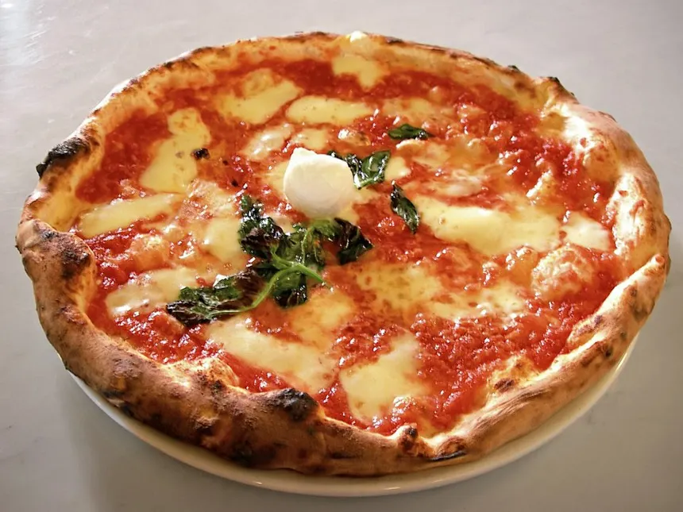

Home Page
Pizza Margherita

Ingredients
- Pizza dough: Homemade or store-bought pizza dough serves as the base of the pizza.
- Tomato sauce: Use a simple tomato sauce made from crushed tomatoes for an authentic flavor.
- Mozzarella cheese: Fresh mozzarella provides a creamy texture and rich taste.
- Fresh basil: Fresh basil leaves add a fragrant and traditional flavor.
- Olive oil: Extra virgin olive oil enhances the taste and helps create a crispy crust.
- Salt: A pinch of salt brings out the flavors of the ingredients.
Quantities
- 1 pizza dough (about 250 g)
- 1/2 cup tomato sauce
- 200 g fresh mozzarella cheese, sliced
- 8-10 fresh basil leaves
- 2 tablespoons extra virgin olive oil
- 1/2 teaspoon salt
Steps
- Gather all your ingredients.
- Preheat the oven to 475 degrees F (245 degrees C).
- Lightly flour a clean surface and roll out the pizza dough into a 12-inch circle.
- Transfer the dough to a lightly greased baking tray or pizza stone.
- Spread the tomato sauce evenly over the dough, leaving a small border around the edges.
- Arrange the mozzarella slices evenly on top of the sauce.
- Drizzle the pizza with olive oil and sprinkle with salt.
- Bake in the preheated oven for 12 to 15 minutes, or until the crust is golden brown and the cheese is melted and bubbly.
- Remove the pizza from the oven and immediately top it with the fresh basil leaves.
- Slice the pizza and serve hot.